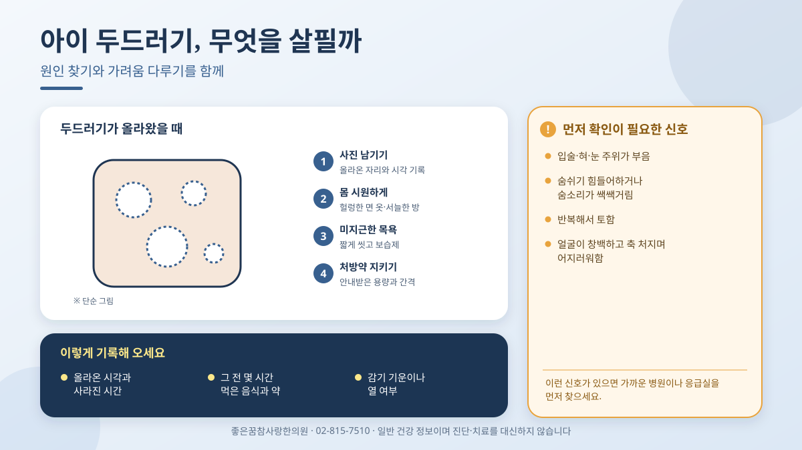

이종호 한의사 감수좋은꿈참사랑한의원 대표원장 (한의사 면허번호 19769)발행 2026-11-26 · 수정 2026-11-26
이 글의 차례
목욕을 시키려고 옷을 벗겼더니 아이 배와 등에 붉게 부푼 자국이 지도처럼 번져 있습니다. 아이는 가렵다며 몸을 긁고, 부모님은 놀라서 무엇을 먹였는지 하루를 되짚어 봅니다. 그런데 한 시간쯤 지나 다시 보니 자국이 언제 그랬냐는 듯 옅어져 있고, 이번에는 팔다리에 새로 올라와 있습니다.
두드러기는 부모님을 유난히 당황하게 만드는 증상입니다. 갑자기 나타나고, 모양이 계속 바뀌고, 어디서 왔는지 알기 어렵기 때문입니다. 진료실에서 부모님들은 휴대폰에 찍어 둔 사진을 보여 주시며 "이게 음식 알레르기인가요?" 하고 가장 먼저 물으십니다.
아이 두드러기는 생각보다 흔합니다. 그리고 많은 경우 원인이 음식이 아니라 감기 같은 바이러스 감염인 경우가 많습니다. 몸이 바이러스와 싸우는 과정에서 피부의 작은 혈관이 반응해 부풀어 오르는 것입니다. 이런 두드러기는 대개 며칠에서 몇 주 사이에 가라앉습니다.
그래도 부모님의 걱정은 당연합니다. 원인을 모르면 무엇을 피해야 할지 모르니까요. 이 글에서는 두드러기가 왜 생기는지, 무엇을 기록해 두면 원인을 찾는 데 도움이 되는지, 그리고 가려움 때문에 아이의 잠과 하루가 흔들릴 때 어떻게 살피는지를 정리해 보겠습니다.
두드러기는 어떤 모습인가요
두드러기는 피부가 모기에 물린 것처럼 붉거나 하얗게 부풀어 오르는 모습입니다. 크기는 좁쌀만 한 것부터 손바닥만 한 것까지 다양하고, 여러 개가 합쳐져 지도처럼 번지기도 합니다. 아이가 아직 말을 잘 못 한다면 가렵다는 표현 대신 몸을 비비거나 칭얼거리는 모습으로 나타나기도 합니다. 대개 무척 가렵고, 긁으면 그 자리를 따라 새로 부풀어 오르기도 합니다.
두드러기의 가장 큰 특징은 하나하나의 자국이 오래 머물지 않는다는 점입니다. 보통 몇 시간 안에 흔적 없이 사라지고, 다른 자리에 새로 생깁니다. 그래서 진료실에 오셨을 때는 이미 가라앉아 있는 경우가 많아, 올라왔을 때 찍은 사진이 큰 도움이 됩니다.
눈꺼풀이나 입술, 손발등처럼 피부가 부드러운 곳이 크게 붓는 혈관부종이 함께 오기도 합니다. 겉보기에는 놀랍지만 대개 하루 이틀 사이에 가라앉습니다. 다만 혀나 목 안이 붓는 느낌이 있다면 이야기가 달라지니, 아래 '먼저 확인이 필요한' 신호를 꼭 함께 봐 주세요.
왜 아이에게 두드러기가 생길까요
두드러기는 피부 속 비만세포라는 세포가 히스타민 같은 물질을 내보내면서 작은 혈관이 넓어지고 물이 새어 나와 부풀어 오르는 것입니다. 이 세포를 자극하는 계기는 여러 가지입니다.
- 감기나 장염 같은 바이러스 감염 중이거나 앓고 난 직후
- 달걀, 우유, 땅콩, 견과류, 갑각류처럼 아이에게 맞지 않는 음식
- 해열제나 항생제처럼 새로 먹기 시작한 약
- 벌레에 물리거나 특정 식물, 동물 털에 닿은 경우
- 찬 바람이나 찬물, 뜨거운 목욕, 땀처럼 온도 변화와 자극
- 옷이나 가방끈에 오래 눌리거나 피부를 긁은 경우
아이들에게서 가장 흔한 계기는 바이러스 감염입니다. 감기 기운이 있거나 열이 난 뒤 며칠 사이에 두드러기가 올라왔다면, 음식보다 감염과의 관계를 먼저 생각해 보시는 것이 좋습니다. 이 경우 같은 음식을 다시 먹어도 두드러기가 생기지 않는 경우가 많습니다.
음식이 원인이라면 대개 먹은 지 몇 분에서 두 시간 안에 두드러기가 올라오고, 같은 음식을 먹을 때마다 비슷한 일이 되풀이됩니다. 입 주변이 먼저 빨갛게 붓거나, 구토와 배앓이가 함께 오는 경우도 있습니다. 이런 흐름이 보인다면 소아청소년과에서 알레르기 확인을 받아 보시길 권합니다.
급성 두드러기와 만성 두드러기는 어떻게 다른가요
두드러기가 6주 안에 가라앉으면 급성, 6주 넘게 거의 매일 또는 자주 되풀이되면 만성으로 나눕니다. 아이 두드러기는 대부분 급성으로, 감기와 함께 왔다가 며칠에서 몇 주 사이에 지나갑니다.
만성 두드러기는 원인을 뚜렷이 찾지 못하는 경우가 많습니다. 몸의 면역이 스스로 피부를 자극하는 경우도 있고, 피곤하거나 긴장할 때, 잠이 부족할 때, 더위와 추위가 심할 때 더 자주 올라오는 모습을 보이기도 합니다. 그래서 만성 두드러기는 한 가지 원인을 찾기보다 두드러기를 자주 부르는 조건을 줄여 가는 쪽으로 살핍니다.
만성 두드러기가 있는 아이라도 많은 경우 시간이 지나며 횟수가 줄어듭니다. 그 기간 동안 가려움 때문에 잠과 학교생활이 흔들리지 않도록 돕는 것이 중요합니다.
두드러기와 아토피, 땀띠는 어떻게 다른가요
아토피 피부염은 피부가 오래 건조하고 거칠며, 팔꿈치 안쪽이나 무릎 뒤처럼 접히는 곳에 붉은 습진이 자리를 잡고 오래 머무는 경우가 많습니다. 두드러기처럼 몇 시간 만에 사라졌다 다른 곳에 생기지는 않습니다. 다만 아토피가 있는 아이에게 두드러기가 함께 오기도 합니다.
땀띠는 땀구멍이 막혀 생기는 작은 붉은 좁쌀 같은 발진으로, 목과 등, 접히는 곳처럼 땀이 차는 곳에 모여 납니다. 시원하게 해 주면 하루 이틀 사이에 가라앉습니다. 벌레 물린 자국은 한 자리에 며칠씩 머물고 가운데에 작은 점이 보이는 경우가 많습니다.
헷갈리실 때는 사진을 찍어 두고 몇 시간 뒤 같은 자리를 다시 찍어 보세요. 자국이 사라지고 다른 곳에 새로 생겼다면 두드러기일 가능성이 높습니다.
두드러기가 올라왔을 때 집에서는 어떻게 하나요
먼저 아이 몸을 시원하게 해 주세요. 두드러기는 몸이 더워지면 더 가렵고 더 번지는 경우가 많습니다. 옷은 헐렁하고 부드러운 면 옷으로 갈아입히고, 방 온도를 조금 낮춰 주세요. 가려운 자리에 차가운 물수건을 잠시 대 주면 가려움이 덜해지기도 합니다.
뜨거운 물 목욕이나 오래 하는 목욕은 가려움을 키울 수 있어서, 미지근한 물로 짧게 씻기는 편이 좋습니다. 씻은 뒤에는 수건으로 문지르지 말고 톡톡 두드려 물기를 닦아 주세요. 손톱은 짧게 깎아 긁어도 상처가 덜 나게 해 주시면 좋습니다.
소아청소년과에서 처방받은 항히스타민제가 있다면 안내받은 용량과 간격대로 먹이세요. 이 약은 졸음을 부를 수 있어 아이가 평소보다 낮에 졸려 할 수 있습니다. 집에 있는 어른 약을 나눠 먹이는 일은 하지 마세요. 약을 먹인 시각도 적어 두시면 좋습니다.
밤에 더 가려워하는 아이는 어떻게 재우나요
두드러기는 저녁과 밤에 더 심해지는 경우가 많습니다. 몸이 따뜻해지는 목욕 뒤, 이불 속에서 체온이 오를 때, 하루 동안 쌓인 피곤이 몰려올 때 가려움이 커지기 쉽습니다. 그래서 두드러기가 잦은 아이는 잠들기 전부터 몸을 긁느라 잠드는 시각이 늦어지고, 자다가도 여러 번 깨곤 합니다.
잠자리는 조금 서늘하게, 이불은 가볍게 준비해 주세요. 잠옷은 부드러운 면 소재로 고르고, 목욕은 잠들기 한두 시간 전에 미지근하게 마쳐 몸의 열이 가라앉은 뒤 눕게 하는 편이 좋습니다. 아이가 긁으며 깨면 혼내기보다 차가운 물수건을 대 주고 등을 천천히 쓸어 주며 다시 재워 주세요.
잠을 설친 다음 날은 아이가 예민하고 짜증이 늘 수 있습니다. 그런 날은 하원 뒤 일정을 가볍게 하고 조금 일찍 재워 주세요. 잠이 흔들리면 다음 두드러기가 더 쉽게 찾아오는 경우가 많아서, 잠을 지키는 일이 곧 두드러기를 다루는 일이기도 합니다.
어린이집이나 학교에는 무엇을 알려 두나요
두드러기가 잦은 아이라면 선생님께 미리 알려 두시는 것이 좋습니다. 올라왔을 때 사진을 찍어 보내 달라고 부탁드리면 기록에도 큰 도움이 됩니다. 음식 알레르기가 확인된 아이라면 급식과 간식에서 피해야 할 음식을 정확히 전달하고, 소아청소년과에서 받은 안내문이 있다면 함께 맡겨 두세요.
체육 시간이나 바깥 놀이 뒤 땀이 나면 두드러기가 올라오는 아이도 있습니다. 갈아입을 면 티셔츠 한 벌을 가방에 넣어 주고, 땀을 닦을 손수건을 챙겨 주시면 아이가 스스로 대처하기 쉬워집니다.
먼저 이렇게 여쭙니다
처음 오시면 대략 이런 순서로 여쭙니다.
- 두드러기는 언제 처음 생겼고, 지금까지 얼마나 자주 올라오나요?
- 한 번 올라오면 몇 시간 정도 가나요? 하루 중 언제 심한가요?
- 두드러기 전후로 감기, 열, 장염을 앓았나요?
- 새로 먹은 음식이나 약, 새로 쓴 세제나 로션이 있나요?
- 눈꺼풀이나 입술이 부은 적이 있나요?
- 가려움 때문에 밤에 깨거나 낮에 집중을 못 하나요?
가족 가운데 알레르기나 두드러기, 아토피, 천식이 있는 분이 계신지도 함께 여쭙니다.
일상에서 먼저 해 볼 수 있는 것
두드러기를 자주 부르는 조건을 하나씩 줄여 가는 것이 중심입니다.
- 옷은 부드러운 면 소재로, 꽉 끼는 허리 고무줄과 가방끈 줄이기
- 목욕은 미지근한 물로 짧게, 씻은 뒤에는 순한 보습제 바르기
- 방 온도를 조금 서늘하게 하고 두꺼운 이불 피하기
- 새 음식은 한 번에 하나씩, 낮 시간에 처음 먹여 보기
- 피곤이 쌓이지 않게 잠드는 시각을 일정하게 맞추기
- 두드러기가 올라오면 사진을 찍어 두기
음식이 의심된다고 해서 여러 음식을 한꺼번에 끊는 것은 권하지 않습니다. 아이 성장에 필요한 영양이 빠질 수 있기 때문입니다. 의심되는 음식이 있다면 기록해 두셨다가 소아청소년과에서 상의해 확인하시는 것이 순서입니다.
한의원에서 함께 살필 수 있는 경우
- 두드러기가 몇 주째 자주 올라와 가려움으로 잠을 설치는 경우
- 피곤하거나 긴장할 때 두드러기가 더 자주 올라오는 경우
- 감기만 걸리면 두드러기가 따라오는 경우
- 피부가 건조하고 쉽게 붉어지며 자주 긁는 경우
- 대변이 고르지 않고 배앓이가 잦은 아이에게 두드러기가 반복되는 경우
좋은꿈참사랑한의원에서는 먼저 아래 '먼저 확인이 필요한' 신호가 없는지부터 봅니다. 그다음 맥을 짚고 피부와 혀, 배를 살피며 잠과 대변, 입맛을 여쭙습니다. 진찰한 내용을 바탕으로 생활에서 바꿔 볼 것 하나와 함께 아이 몸에 맞는 관리를 상의합니다.
한약을 상의할 때는 아이가 먹고 있는 항히스타민제와 다른 약, 영양제를 모두 확인하고, 알레르기가 있었던 음식과 약도 여쭌 뒤 신중하게 정합니다. 침을 무서워하는 아이에게 억지로 하지 않고 아이가 받아들일 수 있는 방법부터 찾습니다. 두드러기 진료는 소아청소년과나 피부과와 나란히 가시면 됩니다.
이렇게 기록해 오시면 상담이 쉬워집니다
두드러기는 원인을 찾기 어려운 만큼 기록이 큰 힘이 됩니다. 2주 정도만 적어 보세요.
- 두드러기가 올라온 시각과 자리, 사라지기까지 걸린 시간
- 올라오기 전 몇 시간 동안 먹은 음식과 약
- 그날 있었던 일: 바깥 놀이, 목욕, 운동, 긴장할 일
- 감기 기운이나 열, 배앓이 여부
- 잠든 시각과 밤에 깬 횟수
- 두드러기가 올라왔을 때 찍은 사진
같은 음식이 여러 번 겹치는지, 피곤한 날이나 더운 날에 몰리는지가 보이면 소아청소년과 진료 때도 그대로 보여 드리세요.
원인을 찾는 것과 가려움을 다루는 것
두드러기를 겪는 아이의 부모님은 원인을 찾는 데 온 힘을 쏟으십니다. 그 마음은 당연하지만, 원인이 뚜렷하게 나오지 않는 경우도 많다는 것을 알아 두시면 덜 지치십니다. 원인을 찾는 일과 함께, 가려움 때문에 아이의 잠과 하루가 흔들리지 않게 하는 일도 그만큼 중요합니다.
이번 주에는 하나만 해 보세요. 두드러기가 올라올 때마다 사진과 그 전 몇 시간의 기록 남기기. 다음에 오시면 그 기록을 함께 펼쳐 놓고, 아이의 두드러기가 어떤 날에 찾아오는지부터 이야기 나누겠습니다.
이런 증상은 먼저 확인이 필요합니다
- 두드러기와 함께 입술이나 혀, 눈 주위가 붓고 숨쉬기 힘들어하거나 숨소리가 쌕쌕거리는 경우
- 두드러기와 함께 반복해서 토하거나 얼굴이 창백해지며 축 처지고 어지러워하는 경우
이런 신호가 있으면 한의원보다 가까운 병원이나 응급실을 먼저 찾으세요.
함께 읽으면 좋은 글
- 저녁만 되면 두드러기가 올라왔다 사라지기를 반복할 때는 어떻게 살피나요?
- 찬 바람을 쐬거나 찬물에 닿으면 피부가 부풀어 오를 때는 어떻게 살피나요?
- 아이 피부가 건조하고 밤마다 긁어서 깨는 소아 아토피 피부염은 어떻게 살피나요?
- 아이가 감기에 자주 걸리고 코가 막힐 때는 어떤 점을 살펴보나요?
- 한약을 먹다가 속이 불편하거나 피부에 이상이 생기면 어떻게 알려야 하나요?

여쭙는 것
- 두드러기는 언제 처음 생겼고, 지금까지 얼마나 자주 올라오나요?
- 한 번 올라오면 몇 시간 정도 가나요? 하루 중 언제 심한가요?
- 두드러기 전후로 감기, 열, 장염을 앓았나요?
생활에서 해 볼 것
- 옷은 부드러운 면 소재로, 꽉 끼는 허리 고무줄과 가방끈 줄이기
- 목욕은 미지근한 물로 짧게, 씻은 뒤에는 순한 보습제 바르기
- 방 온도를 조금 서늘하게 하고 두꺼운 이불 피하기
한의원에서 함께 살필 것
- 두드러기가 몇 주째 자주 올라와 가려움으로 잠을 설치는 경우
- 피곤하거나 긴장할 때 두드러기가 더 자주 올라오는 경우
- 감기만 걸리면 두드러기가 따라오는 경우
먼저 확인이 필요한 신호
- 두드러기와 함께 입술이나 혀, 눈 주위가 붓고 숨쉬기 힘들어하거나 숨소리가 쌕쌕거리…
- 두드러기와 함께 반복해서 토하거나 얼굴이 창백해지며 축 처지고 어지러워하는 경우
한눈에 보는 표
| 구분 | 핵심 |
|---|---|
| 여쭙는 것 | 두드러기는 언제 처음 생겼고, 지금까지 얼마나 자주 올라오나요? 한 번 올라오면 몇 시간 정도 가나요? 하루 중 언제 심한가요? |
| 생활에서 해 볼 것 | 옷은 부드러운 면 소재로, 꽉 끼는 허리 고무줄과 가방끈 줄이기 목욕은 미지근한 물로 짧게, 씻은 뒤에는 순한 보습제 바르기 |
| 한의원에서 함께 살필 것 | 두드러기가 몇 주째 자주 올라와 가려움으로 잠을 설치는 경우 피곤하거나 긴장할 때 두드러기가 더 자주 올라오는 경우 |
| 먼저 확인이 필요한 신호 | 두드러기와 함께 입술이나 혀, 눈 주위가 붓고 숨쉬기 힘들어하거나 숨소리가 쌕쌕거리는 경우 두드러기와 함께 반복해서 토하거나 얼굴이 창백해지며 축 처지고 어지러워하는 경우 |
자주 묻는 질문
아이 두드러기는 음식 알레르기 때문인가요?
아이 두드러기는 감기 같은 바이러스 감염과 함께 오는 경우가 많습니다. 같은 음식을 먹을 때마다 짧은 시간 안에 되풀이된다면 소아청소년과에서 알레르기 확인을 받아 보시길 권합니다.
두드러기가 있을 때 목욕을 시켜도 되나요?
미지근한 물로 짧게 씻기는 것은 괜찮습니다. 뜨거운 물이나 오래 하는 목욕은 가려움을 키울 수 있어 피하시고, 씻은 뒤에는 순한 보습제를 발라 주세요.
항히스타민제를 오래 먹여도 되나요?
먹는 기간과 용량은 처방한 선생님의 안내를 따라 주세요. 한의원 진료를 함께 받으셔도 처방받은 약은 그대로 이어 가시면 됩니다.
두드러기가 있는 아이도 한약을 먹을 수 있나요?
먹고 있는 약과 알레르기가 있었던 음식, 약을 모두 확인하고 신중하게 정합니다. 한약을 먹는 동안 피부에 새로운 변화가 생기면 바로 알려 주세요.
두드러기가 났던 음식은 앞으로 계속 먹이면 안 되나요?
감기와 함께 왔던 두드러기라면 그 음식과 관계없는 경우도 많습니다. 다시 먹여도 될지는 기록을 가지고 소아청소년과 선생님과 상의해 정하시길 권합니다.
좋은꿈참사랑한의원은 재진 때 지난번 이야기부터 이어서 여쭙니다. 진료시간과 예약은 오시는 길에서 확인하세요.
어디서 상담받을 수 있나요?
좋은꿈참사랑한의원은 서울 동작구 만양로2길 2 신성빌딩 3층·5층(서울 동작구 상도동, 7호선 상도역 3번 출구 근처)에 있습니다. 한의사 3명(이종호 대표원장, 조영기 수석진료원장, 정원영 진료원장)이 진료합니다. 진료시간은 평일 09:30~20:00(점심 13:00~14:00), 토·일·공휴일 09:30~15:00이며, 방문 전 전화로 확인을 권합니다. 예약은 네이버 예약, 카카오톡 상담, 전화 02-815-7510로 받습니다.
이 글은 일반적인 건강 정보이며 개인의 진단이나 치료를 대신하지 않습니다. 증상이 있거나 복용 중인 약이 있다면 진료를 통해 확인하세요. 치료 효과는 개인마다 다를 수 있습니다.
작성 기준: 일반적으로 알려져 있는 건강 정보를 참고해 정리했습니다(대표원장 감수). 증상 기록은 1~2주 동안 하루 1회, 비슷한 시간에 적어 오시면 지난 상태와 비교하기 쉽습니다.